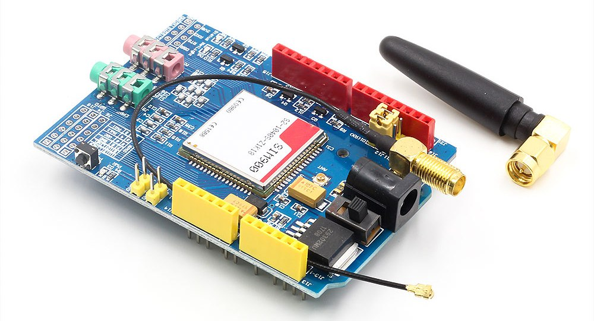
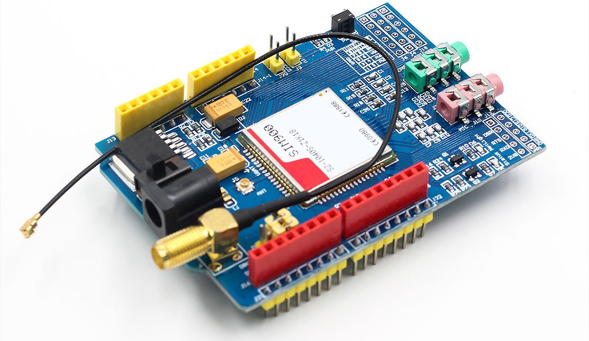
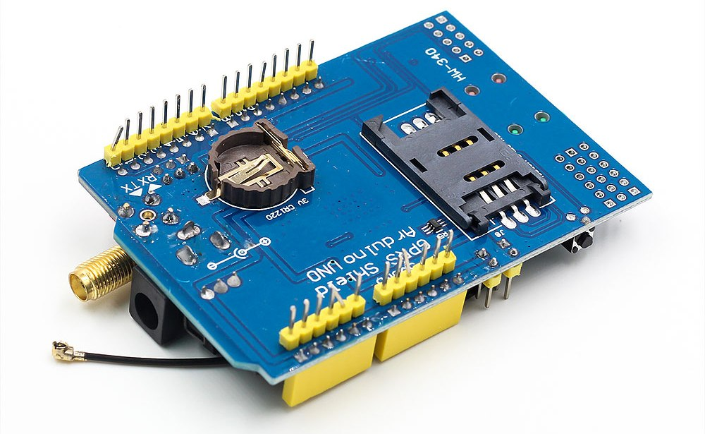
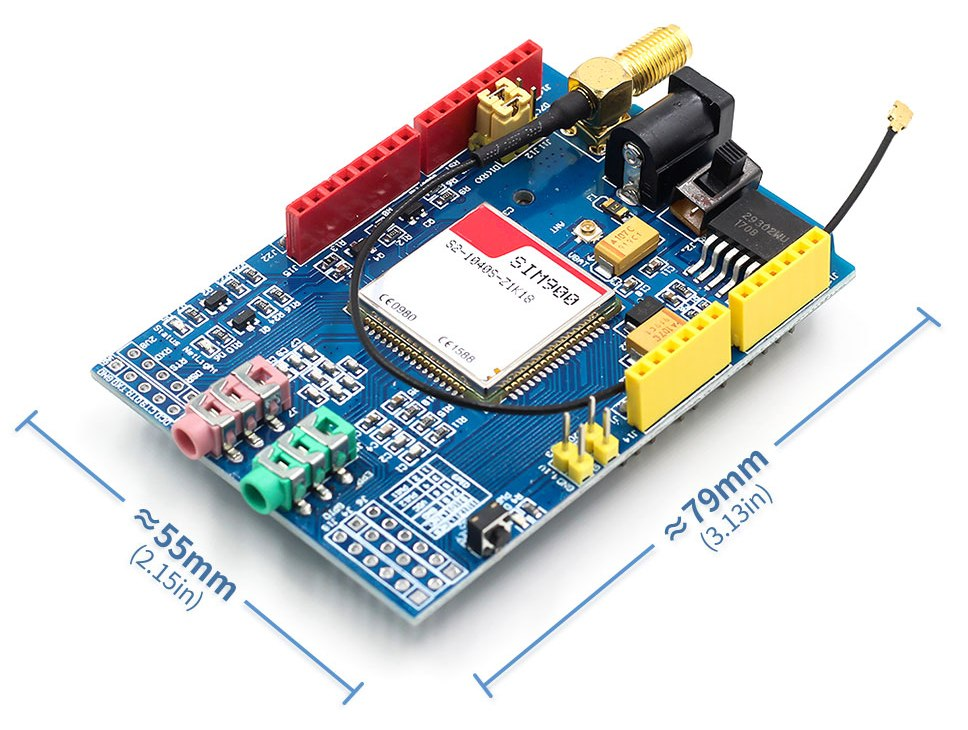
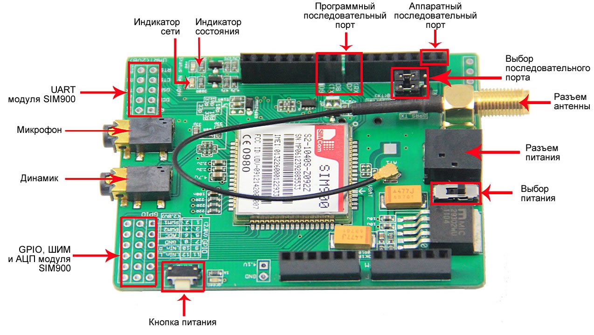
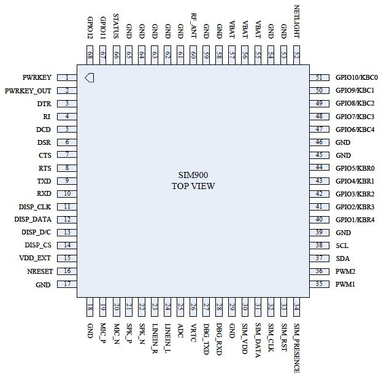
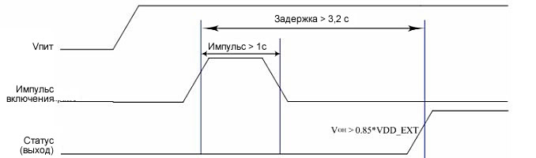

GSM/GPRS модуль SIM900 Shield
Сохранить или поделиться
Купить на AliExpressКупить на AliExpressКупить на AliExpressКупить на AliExpressКупить на Ali
Модуль для работы микроконтроллерных устройств Arduino и аналогичных в сетях сотовой связи по стандартам GSM и GPRS. Ориентирован на использование в системах автоматики и управления. Обмен данными с другими модулями происходит через интерфейс UART. Модуль собран на модуле SIM900, имеет антенну, слот для SIM карты и 2 гнезда 3,5 мм.
GPRS/GSM SIM900 Shield с антенной может сопрягаться непосредственно с микроконтроллером через интерфейс UART или работать совместно с персональным компьютером при использовании преобразователя интерфейса порт ПК–UART. Это возможно благодаря программной совместимости на уровне класса команд используемых для управления модемами – АТ команды.GSM/GPRS модуль SIM900 Shield
Плата GSM модуля на стороне компонентов содержит соединители для подключения антенны, наушников и микрофона. На стороне пайки платы размещены держатель батареи CR1220 3 вольта поддерживающей работу часов модуля и контейнер для установки симкарты.
Одно из применений устройства – система слежения за перемещениями транспорта совместно с устройством ГЛОНАСС или GPS. Отправка SMS сообщений позволяет использовать модуль в диспетчеризации, беспроводной сигнализации и в охранных системах. Модуль незаменим для контроля и управления подвижными объектами, перемещающимися на большие расстояния. Или в случае удаления оператора на большое расстояние от стационарного объекта.
GSM/GPRS модуль SIM900 Shield. Вид сверхуGSM/GPRS модуль SIM900 Shield. Вид снизуGSM/GPRS модуль SIM900 Shield. Размеры
Характеристики
Компоненты управления
Переключателем Power select устанавливается источник питания: внешний, подключенный к разъему питания, или источник питания микроконтроллерного модуля Arduino.
Кнопкой Power key при нажатии и удерживании в течение 2 с включается или выключается питание.
Индикация
О состоянии модуля сообщают 3 светодиода:
Сообщения светодиода Net Light.
Расположение компонентов на платеРасположение компонентов на плате
SIM900 содержит порт UART, его сигналы выведены на выводы платы расширения и соединены с перемычками, устанавливающими с какими контактами модуля Shield GPRS/GSM SIM900 будет соединен порт UART компонента SIM900 с D0, D1 или D7, D8.
UART платы расширения GPRS/GSM можно подключить: к аппаратному интерфейсу микроконтроллера Arduino через контакты TXD и RXD модуля Shield GPRS/GSM, для этого используются D0, D1. Или к программно эмулируемому средствами Arduino, для этого используются контакты D7 и D8 модуля Shield GPRS/GSM. Полный интерфейс UART имеет 10 сигналов выведенных на контакты в углу платы: R1, DCD, DSR, CTS, RTS, GND, 2V8, TX, RX, DTR.
12 подписанных контактов цифровых линий ввода-вывода GPIO расположены в углу платы. Имеется 2 контакта выходных сигналов с широтно-импульсной модуляцией PWM1, PWM2. Вход АЦП контакт ADC. Интерфейс встроенного счетчика времени имеет 4 контакта. Обозначение контактов: DISP_CLK, DISP_DATA, DISP_D/C, DISP_CS.
Контакт D9 используется для программного контроля включения или выключения SIM900.
На плате установлен разъем для подключения антенны.Назначение выводов компонента SIM900.
Внешнее включение и выключение питания
Включить или выключить питание модуля можно с помощью сигнала на управляющем входе D9. Для изменения состояния на D9 подается импульс продолжительностью 1 с. Изменение состояния происходит спустя 3,2 с после начала импульса.Включение модуля. Графики напряжения питания модуля, внешнего управляющего импульса и индикатора питания STATUS.
При управлении модулем управляющим устройством включение должно происходить без применения кнопки Power key, т. е. сразу после подачи питания. Для этого в программу микроконтроллера следует добавить несколько команд.
void powerUpOrDown()
{
pinMode(9, OUTPUT);
digitalWrite(9,LOW);
delay(1000);
digitalWrite(9,HIGH);
delay(2000);
digitalWrite(9,LOW);
delay(3000);
}
Эту группу команд в программе можно использовать и для выключения модуля. Также выключить GSM модуль можно посылая AT команду.
AT+CPOWD=1
�